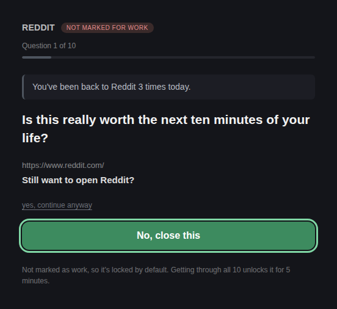
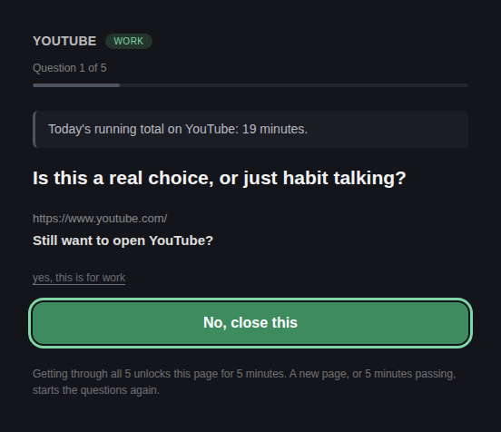
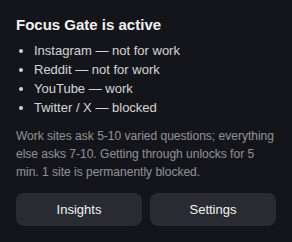
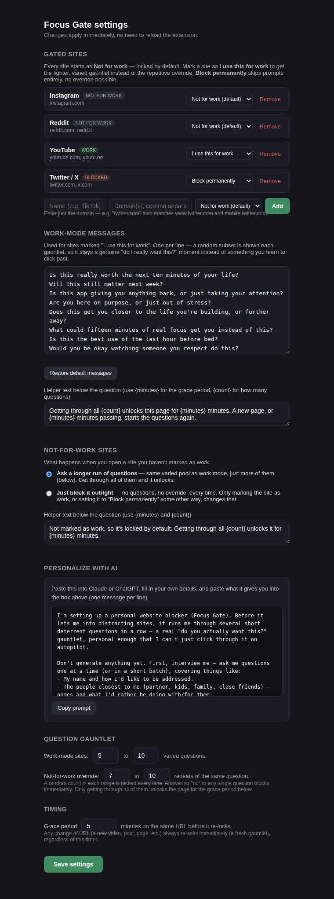
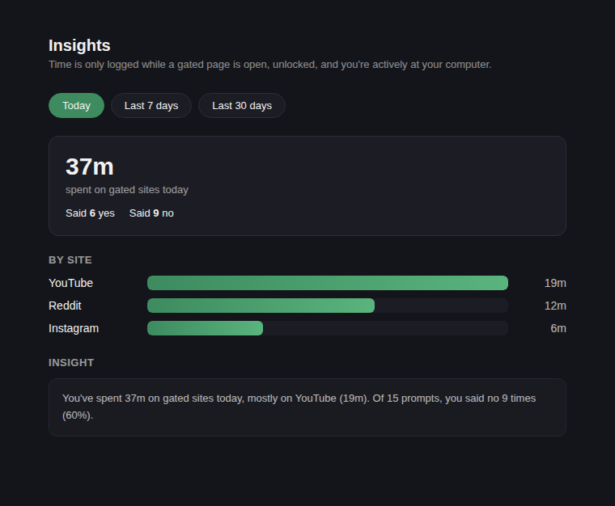

A personal Chrome extension that makes it harder to fall into Instagram, Reddit, YouTube — or any site you add — on autopilot.
Manifest V3No analyticsNo network calls
What it does
Every site you gate starts as Not for work. Opening it runs a gauntlet of deterrent
questions — each one grounded in a real fact, either your actual usage today (times opened, minutes
spent) or a general fact about why these feeds are built to pull at you. Answer no to any
single question and the tab is blocked. Get through the whole run and it unlocks for a short grace period,
then locks again.

The gate for a site that isn't marked as work — the longer override gauntlet. The fact line at top is a real number pulled from today's usage.

The lighter gauntlet for a site marked "I use this for work".

Toolbar popup: a quick summary of every site's current state.
Three states per site
I use this for work — a shorter, lighter gauntlet.
Not for work (the default) — a longer override gauntlet, or a flat block, your choice.
Block permanently — no prompt, ever, no override.
Grounded in real facts, not just guilt
Every question leads with either a real personal-usage fact ("This is the 3rd time you've opened
Reddit today") or a general, evidence-grounded fact about how these feeds are designed (variable-reward
loops, weak-tie "connection" standing in for real relationships, poor retention from passive scrolling).
A fixed closing line — "Still want to open Reddit?" — is always what the Yes/No buttons
actually answer, so the pairing always makes sense no matter which fact or question comes up.
Configurable from the settings page

Add sites, edit the question pool, choose override-vs-block behavior, generate a personalized question pool with an AI prompt, and tune gauntlet length and grace period.
Add or remove gated sites (any domain).
Edit the deterrent question pool directly, or paste in a personalized set generated by Claude or ChatGPT using the built-in interview prompt.
Choose what happens on a not-for-work site: a longer override gauntlet, or a flat block.
Tune gauntlet length and the grace period.
Usage insights

Time spent per site, yes/no decision counts, and a daily trend — today, last 7 days, or last 30 days.
Privacy
Focus Gate reads no page content, sends nothing to any server, and has no analytics. Everything is
stored locally in your browser. See the privacy policy for details.